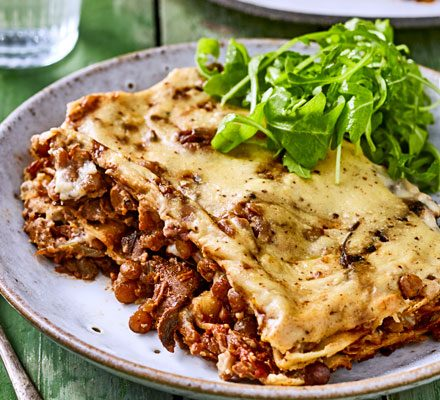

Lasagne

Lasagne with lentils and cashew cream topped with rocket.
This lasagne is creamy and nutriscious packed with protein. It's size means that you can feed four hungry people in one go or freeze it an enjoy heated up on the pan on different ocassions.
The biggest selling point of this lasagne is creaminess. If you think that milk based bechamel can't be replaced with plant-based alternative you'll be show different!
Ingridients
- 30g bag dried porcini mushrooms
- tbsp olive oil
- onion, finely chopped
- 2 carrots, finely chopped
- 2 celery sticks
- finely chopped 4 garlic cloves
- sliced few sprigs of thyme
- 1 tsp tomato purée
- 100ml vegan red wine (optional)
- 250g dried green lentils
- 2 x 400g cans whole plum tomatoes
- 250g pack chestnut mushrooms, chopped
- 250g pack portobello mushrooms, sliced
- 1 tsp soy sauce
- 1 tsp Marmite
- 6 tbsp plain flour
- 900ml soy milk
- 1 whole nutmeg, for grating
- 12 lasagne sheets
- 2-3 tbsp nutritional yeast (optional, adds cheesy flavour)
- green salad, to serve
Steps:
- Pour 800ml boiling water over the dried porcini and leave for 10 mins until hydrated. Meanwhile pour 1½ tbsp oil into a large saucepan. Add the onion, carrot, celery and a pinch of salt. Cook gently, stirring for 10 mins until soft. Remove the porcini from the liquid, keeping the mushroomy stock and roughly chop. Set both aside.
- Add the garlic and thyme to the pan. Cook for 1 min, then stir in the tomato purée and cook for a minute more. Pour in the red wine, if using, cook until nearly reduced, then add the lentils, reserved mushroom stock and cans of tomatoes. Bring to the boil, then reduce the heat and leave to simmer with the lid on.
- Meanwhile, heat a large frying pan. Add 1½ tbsp oil, then tip all of the mushrooms into the pan, including the rehydrated ones. Fry until all the water has evaporated and the mushrooms are deep golden brown. Pour in the soy sauce. Give everything a good mix, then scrape the mushrooms into the lentil saucepan.
- Stir in the Marmite, then continue to cook the ragu, stirring occasionally, over a low to medium heat for 30-45 mins until the lentils are cooked and the sauce is thick and reduced, adding extra water if necessary. Remove the thyme sprigs and season to taste.
- Heat the oven to 180C/160C fan/gas 4. To make the white sauce, heat 3 tbsp olive oil in a pan, whisk in the flour and cook for a couple of minutes to get rid of the raw flour taste, then slowly whisk in the soya milk. Cook until you have a creamy sauce, about 10 mins. Season to taste, adding a good grating of nutmeg.
- Spread a third of the ragu on the bottom of your ovenproof dish, then top with six lasagne sheets, followed by another third of the vegan white sauce, then another third of the ragu. Top with the remaining lasagne sheets, then the remaining ragu and finally, spread over the rest of the white sauce. Sprinkle over the nutritional yeast, if using, and bake for 45 mins-1 hr until the pasta is cooked.